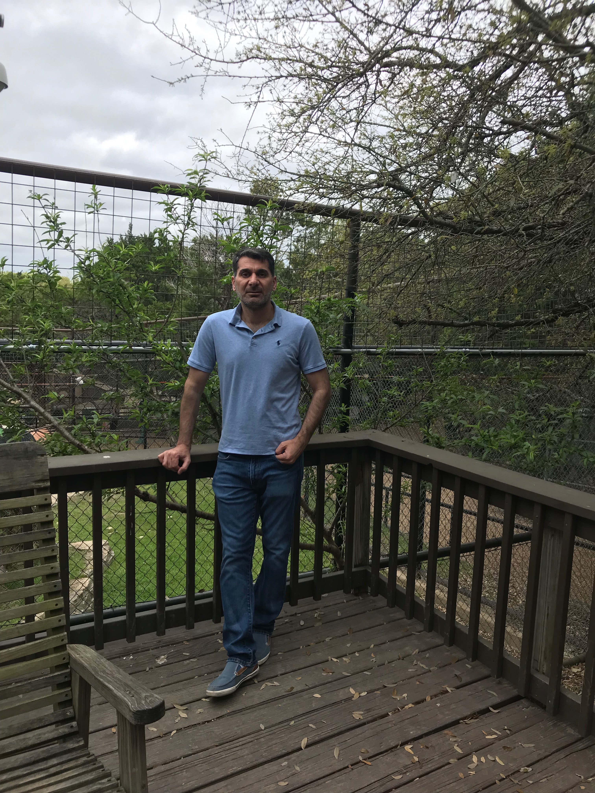

About Me

Hello Everyone!
My name Mazin Abed "I know it is on the top of the page", and was born and raised in Iraq. I worked with US army and Multi National forces in Iraqi freedom Operations back in 2003 as atranslator and cultural adviser. In 2009 I moved to Austin TX "I did not choose Austin, Austin chose me!!" and start warking in Logistics with the same company for 10 years.
The fun part start in 2019 when I joined the Bootcopm at the UT in Austin TX where I learned how to code and create web pages. This was huge transition and I was able to combine my knowlegde in translation, Logistics and coding to make new path for sucsess and new furture for my career.